Introduction
smoothwall is an open-source Linux-based Firewall software designed to provide network security and internet control to small and medium-sized businesses, educational institutions, and non-profit organizations.
It provides features such as:
- Outbound and inbound web content filtering.
- Support for LAN, DMZ, and wireless networks.
- Timed access.
- Virtual Private Network.
- Portforwardinding, etc.
Smoothwall can be installed on a dedicated hardware appliance or as a virtual machine on an existing server. In this guide, we discuss how to install Smoothwall Express in Oracle VirtualBox.
Downloading the ISO file
One may download the ISO from SourceForge. Click here to download. For this guide, select the iso file Express-3.1-x86064.iso from the provided list.
Setup In VirtualBox
In your VirtualBox application:
Click New. A dialog box will appear.
Enter a Name to identify the Smoothwall Virtual machine.
Select a Folder to store smoothwall configuration settings.
Select the smoothwall ISO Image from the download directory.
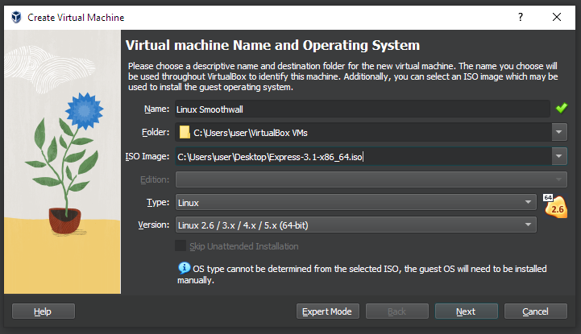Click Next.
Allocate a Base Memory of at least 2048 MB and 2 CPU cores.
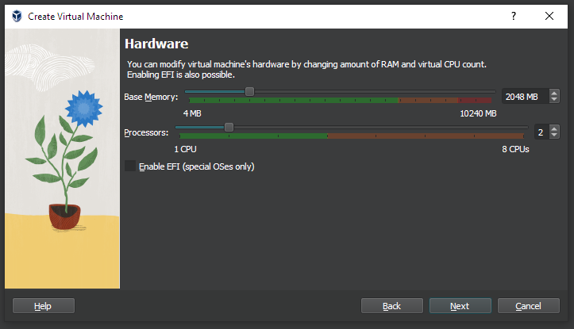Click Next.
Select the default Virtual Hard disk setting as Create a Virtual Hard Disk Now.
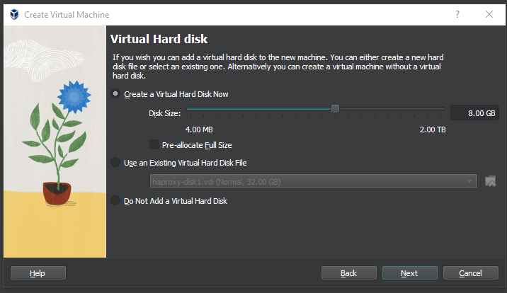Click Next.
Confirm the Summary of your settings.
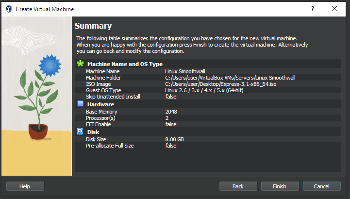Click Finish.
VirtualBox Network Configurations
Smoothwall will only work if at least 2 Network adapters are in Bridged mode.
With the smoothwall instance selected, click the settings button.
Click the Network tab.
For Adapter 1, Enable the Network Adapter by clicking the check box.
Select the adapter as a Bridged Adapter.
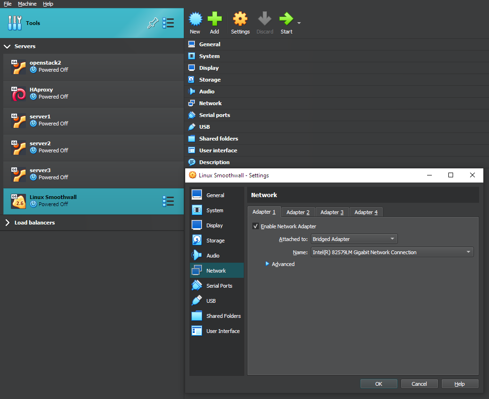Repeat this setting for Adapter 2.
Click OK.
Installation
With the smoothwall instance selected:
Click the Start button to start the installation. A new window instance will appear.
Select the Boot Option, Install Smoothwall Express.
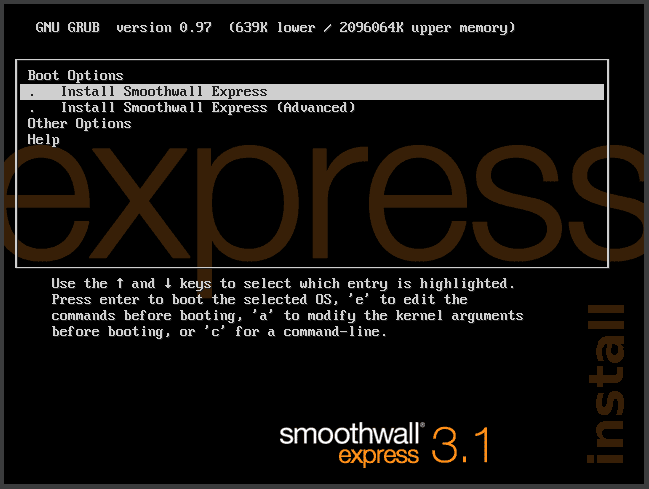Press OK for the next 3 dialog windows.
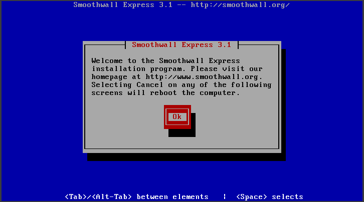 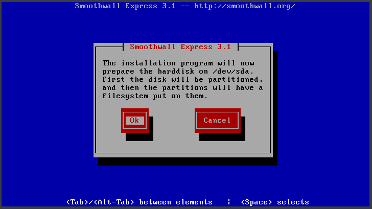 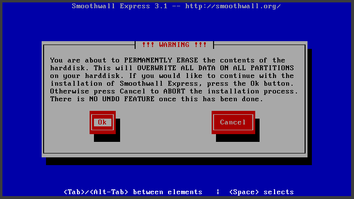Virtualbox will partition your hard drive afterward. Click OK after getting a congratulations message.
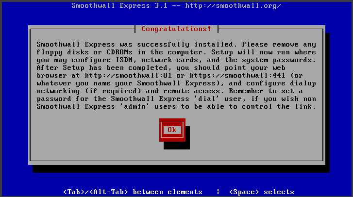Smoothwall will ask if you want to restore the configuration from a previous installation. Select No.
Select Keyboard mappings as ua-ws [qwerty].
Select the Timezone you are in from the provided list.
Enter a hostname for your machine and press OK.
Select the Default security policy as Open and press OK.
Network Configurations
Network configuration type
Change the Network configuration type to Green + Red.
Card assignments
In this section, we assign network cards to the Green and Red Interfaces.
Start with Green and press OK.
Then Red and press OK. You’ll get a message. All cards successfully allocated.
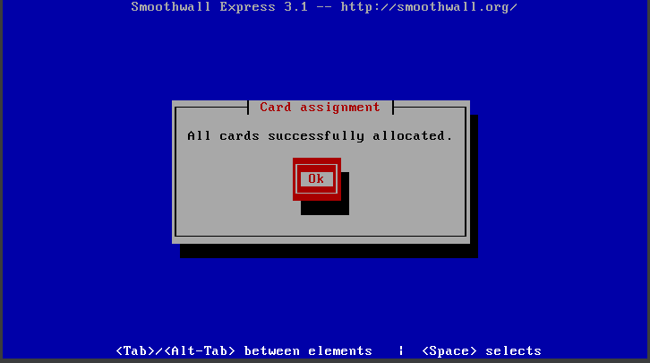Press OK.
Address settings
In this section, we add IP addresses to the Green and Red Interfaces.
Select Green.
Press OK on the dialog box with a warning shows up.
Enter the IP address for the Green Interface and its Network Mask.
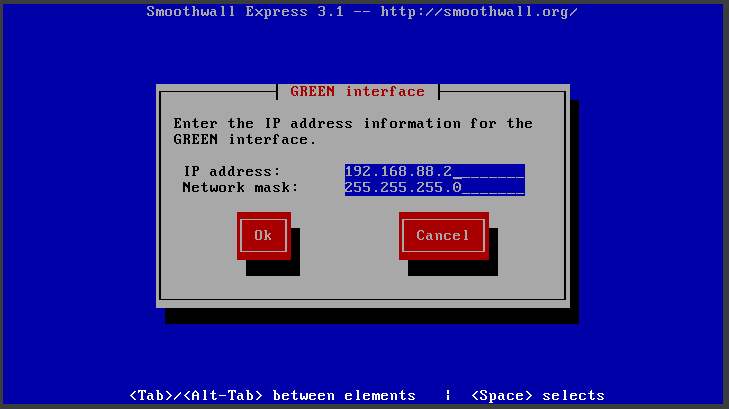Press OK to proceed.
Change the address settings for the RED Interface by selecting DHCP.
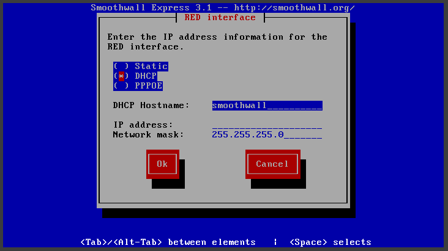Press OK to proceed.
In the Address settings section, Press Done.
DNS and Gateway settings
In this section, we configure DNS and Gateway settings for the firewall.
Add the Ip address for the primary DNS in IPV4 format.
Add the IP address for the secondary DNS in ipv4 format.
Enter the IP address of your router as the Default Gateway.
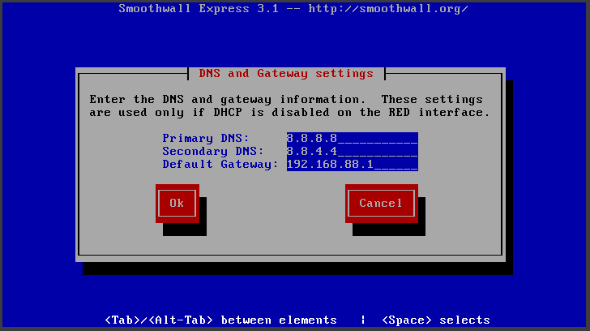Within the Network configuration menu section, press Done.
Within the selection menu section, press Finished.
Web Admin and root password
Web admin password
Enter a new admin password for the web interface. The password to use when logging into web admin pages.
Confirm the password by entering it in the Again field.
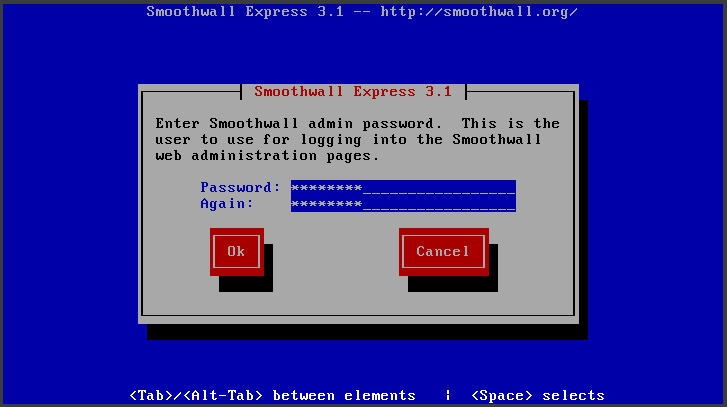Press OK.
Root password
Enter a new root user password. One to use for the command line access.
Confirm the password by entering it in the Again field.
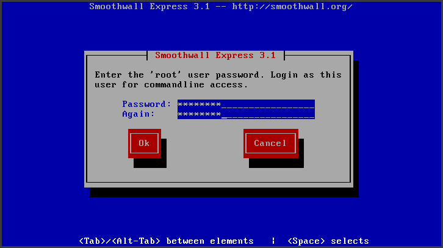Press OK.
Congratulations! The setup is complete.
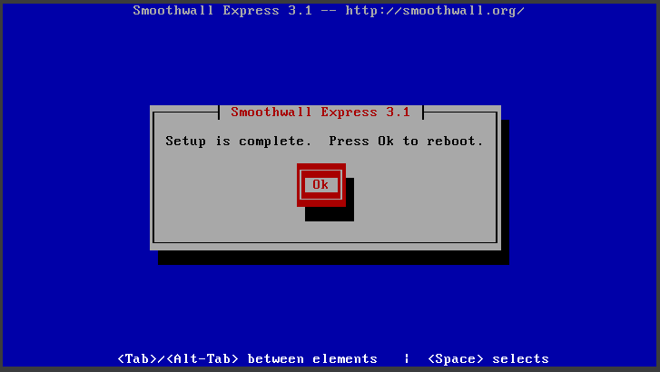Press OK to reboot.
After rebooting, access the firewall instance in the web browser using IP address https://<<ip.addr>>:81, For example, http://192.168.88.2:81
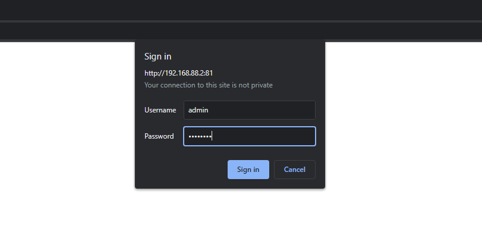The default Username is admin, and the password is one you set.
Conclusion
Installing Smoothwall in Oracle VirtualBox can be an excellent option for users looking for a reliable and secure firewall solution. By following the installation steps and configuring the necessary settings, users can create a virtual network that provides robust protection against unauthorized access and malicious attacks. Moreover, since Smoothwall is open-source software, it is highly customizable and can be adapted to suit a wide range of network configurations and security requirements.